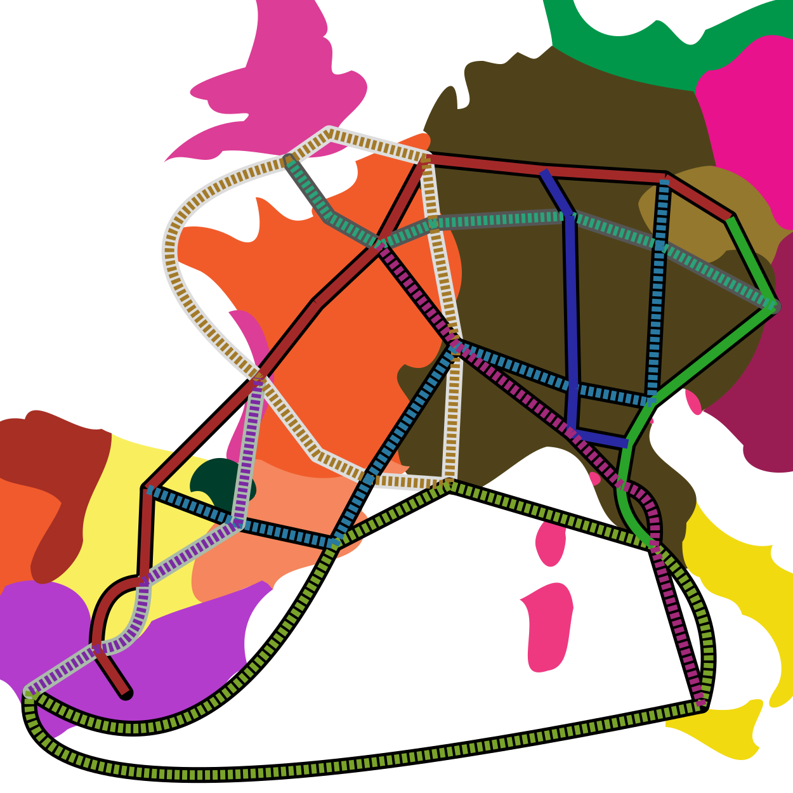

HomeHow to Play
The fox and geese alternate turns moving along the paths.
You play as the geese and will move first after clicking Start.
Legal Moves
Any one goose can move 1 space in any direction to an unoccupied city as long as there is a path between the cities.
The fox can also move to any unoccupied, connected city or it can jump over one goose to remove that goose from the game.
A jump must remain on 1 path so it must end on an unoccupied city on the same color path as it started.
Winning
The goal for the fox is to reach Rome (or kill enough geese to guarantee victory).
The goal for the geese is to trap the fox so that is has no moves.
Mechanics
To move, click a goose and then click the city to move it to.
Once you have clicked on a goose you must move it or leave it where it is!
You only have 60 seconds each turn to make your decision.
After taking your turn, make the fox's move by clicking the box in the upper left two times (for a regular move) or three times (for a jump).

13 Geese Defending Rome
Choose Level:
Easy1✓2✓3✓4✓ Medium5✓6✓7✓8✓9✓ Hard10✓11✓12✓13✓How to Play
The fox and geese alternate turns moving along the paths.
You play as the geese and will move first after clicking Start.
Legal Moves
Any one goose can move 1 space in any direction to an unoccupied city as long as there is a path between the cities.
The fox can also move to any unoccupied, connected city or it can jump over one goose to remove that goose from the game.
A jump must remain on 1 path so it must end on an unoccupied city on the same color path as it started.
Winning
The goal for the fox is to reach Rome (or kill enough geese to guarantee victory).
The goal for the geese is to trap the fox so that is has no moves.
Mechanics
To move, click a goose and then click the city to move it to.
Once you have clicked on a goose you must move it or leave it where it is!
You only have 60 seconds each turn to make your decision.
After taking your turn, make the fox's move by clicking the box in the upper left two times (for a regular move) or three times (for a jump).
These instructions can be found in-game by clicking help in the top right.